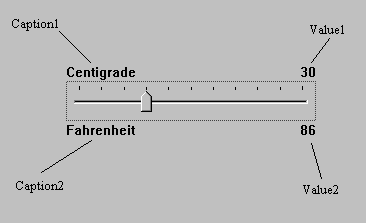
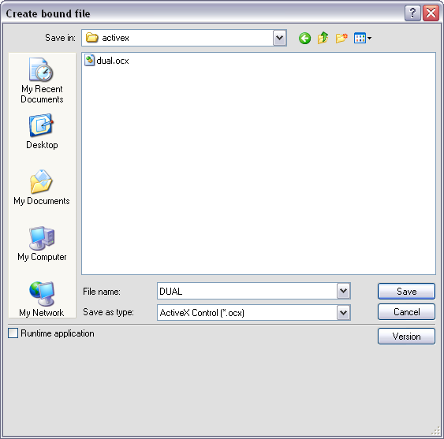
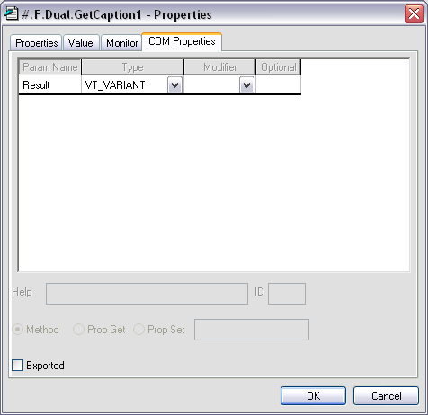
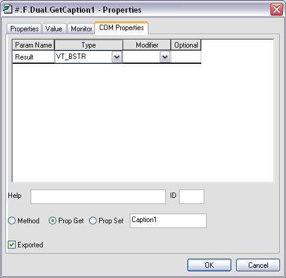
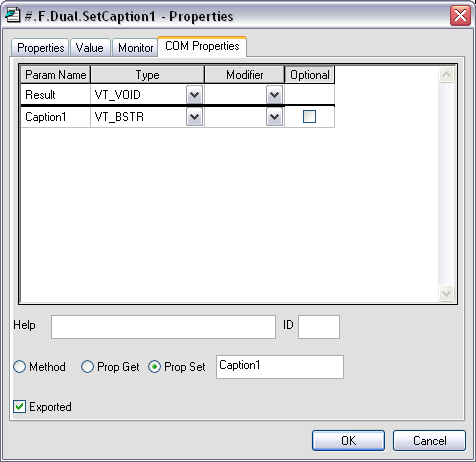
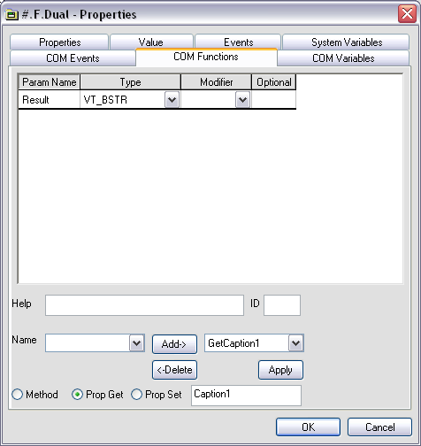
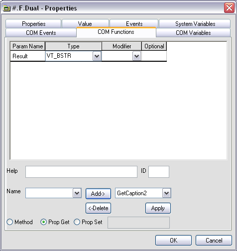
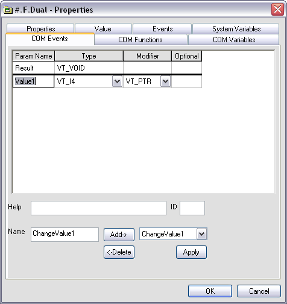
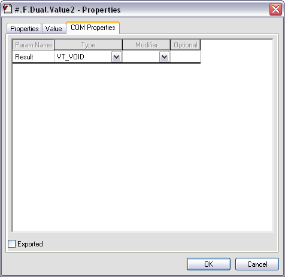
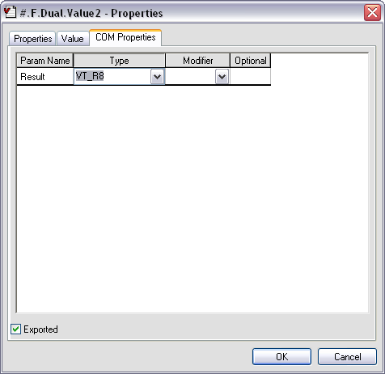

The ActiveX control we will use in this example is deliberately an extremely simple one; so that the intricacies of the control itself do not get in the way of the principles involved. In practice, there are actually very few restrictions concerning the complexity of the ActiveX control, and it is perfectly possible to package complete multiple-window Dyalog APL applications in this way.
Your ActiveX control will be called a Dyalog Dual Control and is based on the Dyalog APL TrackBar object.
The Dual control allows the user to enter a number using a slider, whilst displaying its value in two different units. For example, you could use it to enter a temperature value which is displayed in both Centigrade and Fahrenheit units. Equally, the same control could be used to enter a measurement of length which is concurrently displayed in centimetres and inches.

None. (The Dual control provides no methods.)
The Dual control provides the following properties:
| Property | Description |
|---|---|
| Caption1 | A text string that describes the primary units. This is displayed in the top left corner of the object. |
| Caption2 | A text string that describes the secondary or derived units. This is displayed in the bottom left corner of the object. |
| Value1 | The current value of the control measured in primary units |
| Value2 | The current value of the control measured in secondary units. |
| Intercept | Used to derive Value2 from Value1 |
| Gradient | Used to derive Value2 from Value1 |
| Min | The minimum value of Value1 |
| Max | The maximum value of Value1 |
Value2 is derived from Value 1 using the expression:
Value2←Intercept+Gradient×Value1
Your Dual control will generate a ChangeValue1 event whenever the user alters Value1 using the slider.
The event message will contain a single parameter (the new value) which may be modified by the host application.
In other words, every time the value in the control changes, the host application may detect this as an event and has the opportunity to override the user.
Your Dual control will also generate a ChangeValue2 event whenever the derived value in the control (Value2) changes. This event is reported for information only.
To save time, the basic APL code for the Dual control has already been written. However, you will have to turn it into an ActiveX control yourself.
Load the DUALBASE workspace:
)LOAD SAMPLES\ACTIVEX\DUALBASE
Run the function TEST and observe how the 2 Dual controls behave.
View the function TEST and observe how 2 separate instances of the Dual namespace F.D1 and F.D2 have been created using ⎕OR and ⎕NS.
Using the Dyalog APL Workspace Explorer, open up the various namespaces. See how F.D1 and F.D2 are clones of Dual.
Open the function Dual.Create and see how the individual components of the control are defined.
Close the Form F.
Change the name of the workspace to DUAL:
)WSID DUAL
Make a new namespace called F
)NS F
Using the Workspace Explorer, move the Dual namespace into F, so that Dual is a child namespace of F.
Now edit the function F.Dual.Create and make the following changes:
Remove all references to the local variable POSITION. This change is required because an ActiveX control has no say in its position within its parent. (Hint: use the Search/Replace dialog to remove all occurrences of POSITION+)
Remove the right argument, SIZE and change Create[1] from:
H W←SIZE
to
H W←Size
This change allows the control to fit itself within the space allocated by the host application.
Change Create[4] from:
CH←⊃##.GetTextSize 'W'
to
CH←⊃GetTextSize 'W'
The original code was designed to pick up the character height from the parent Form. The ActiveXControl object does this automatically via its own GetTextSize method.
After making these changes, the Create function should be as follows:
∇ Create;H;W;POS;SH;CH;Y1;Y2
[1] H W←Size
[2] SH←40 ⍝ Default Trackbar height
[3] POS←2↑⌊0.5×0⌈(H-SH)
[4] CH←⊃GetTextSize'W'
[5] 'Slider'⎕WC'TrackBar'(POS)('Size'SH W)
[6] Slider.(Limits AutoConf)←(Min,Max)0
[7] Slider.(TickSpacing TickAlign)←10 'Top'
[8] Slider.onThumbDrag←'ChangeValue'
[9] Slider.onScroll←'ChangeValue'
[10] Y1←POS[1]-CH+1
[11] Y2←POS[1]+SH+1
[12] 'Cap1'⎕WC'Text'Caption1(Y1,0)('AutoConf' 0)
[13] 'Cap2'⎕WC'Text'Caption2(Y2,0)('AutoConf' 0)
[14] 'V1'⎕WC'Text'(⍕Value1)(Y1,W)
('HAlign' 2)('AutoConf' 0)
[15] CalcValue2
[16] 'V2'⎕WC'Text'(⍕Value2)(Y2,W)
('HAlign' 2)('AutoConf' 0)
∇Open the function F.Dual.Build. This function turns the Dual’s parent namespace into a Form (an ActiveXControl currently requires a parent Form) and turns Dual itself into an ActiveXControl. It then attaches functions Create and Configure as callbacks on the Create and Configure events of the ActiveXControl object itself.
∇ Build
[1] ##.⎕WC'Form'('Coord' 'Pixel')('KeepOnClose' 1)
[2] ⎕WC'ActiveXControl'('Size' 80 200)
('KeepOnClose' 1)
[3] ⎕WS'Event' 'Create' 'Create'
[4] ⎕WS'Event' 'Configure' 'Configure'
[5] ⎕NQ'' 'Create'
∇Run function F.Dual.Build. You should see a Form containing a single instance of the Dual control. Please resist any temptation to play with it at this stage; we want it to be in its default state for when we save it.
Type the following expression; note that the ClassID, which uniquely identifies your control, is allocated when you create the ActiveXControl object.
F.Dual.ClassID
Save the workspace (DUAL.DWS).
From the Session File menu, select Export, choose where you want to save your OCX, and then click Save. It is a good idea to clear the Runtime application checkbox so that you can debug the control if anything goes wrong.

This section describes how you can test and exercise the Dual control using Microsoft Visual Basic 2010 Express which is henceforth referred to as VB.
Close Dyalog APL
Start VB and create a new Windows Forms Application Project.
Click the right mouse button in the General section of the Toolbox window and select Choose Items ... from the pop-up menu. In the Choose Toolbox Items dialog box, click the COM Components tab.
Locate the control named Dyalog DUAL Control,enable its check box and click OK. This adds a tool for the Dual control to the VB Toolbox.
Click on the new tool and drag it onto your Form. An instance of the Dual control will appear.
Repeat this step to position a second instance of the Dual control on your VB Form.
Click the Start Debugging button.
Exercise the two Dual controls.
Click the Stop Debugging.button.
Click on one of the Dual controls and scroll through its Property list. Notice that all the properties listed are standard VB ones; there are no properties (or indeed methods and events) exported. We will learn how to do this next.
Close but do not save the project.
Start Dyalog APL and load the DUAL workspace (Hint: use the File menu; it will be the most recently saved file).
Change space into the F.Dual namespace.
)CS F.Dual
The properties we wish to export are:
| Caption1 | Description of the primary set of units |
| Caption2 | Description of the secondary set of units |
| Value1 | The primary value in the control |
| Min | Minimum for Value1 |
| Max | Maximum for Value1 |
| Intercept | Used to derive the secondary value (Value2) |
| Gradient | Used to derive the secondary value (Value2) |
Although we could export all these properties as variables, it is generally more useful to employ Get and Put functions. The reason for this is that there is no mechanism to detect when the host application changes a property/variable; nor is there any mechanism to prevent it assigning an inappropriate value. The Get and Put functions you need are listed below. To save you time, you can copy them in from the workspace DUALFNS.
)COPY SAMPLES\ACTIVEX\DUALFNS
∇ R←GetCaption1 [1] R←Caption1 ∇ SetCaption1 C [1] Cap1.Text←Caption1←C ∇ R←GetCaption2 [1] R←Caption2 ∇ SetCaption2 C [1] Cap2.Text←Caption2←C ∇ R←GetIntercept [1] R←Intercept
∇ SetIntercept I [1] Intercept←I [2] CalcValue2 [3] V2.Text←⍕Value2 ∇ R←GetGradient [1] R←Gradient ∇ SetGradient G [1] Gradient←G [2] CalcValue2 [3] V2.Text←⍕Value2 ∇ R←GetValue1 [1] R←Value1 ∇ SetValue1 V [1] 1 ⎕NQ'' 'ChangeValue'V
The Get functions need no explanation; they simply return the value of the corresponding variable. The Set functions assign a new value to the corresponding variable and update the control accordingly. SetValue1 does this by enqueuing a Scroll event to the Slider, which in turn invokes the ChangeValue callback.
Display the Object Properties dialog box for the function GetCaption1. (Hint: use the Workspace Explorer).
Select the COM Properties tab. As you have not yet defined any OLE attributes, the default display is as follows:

Check the Exported option button.
Change the data type for the Result to VT_BSTR(a text string).
Check the Prop Get radio button to indicate that this is a Property Get function and enter the name of the property (Caption1) to which it applies.
Note that it is not necessary for the property name referenced by the Get and Put functions to correspond to a variable name, although in this case it does.
The final COM Properties dialog box for GetCaption1 should appear as follows. Click OK to save your changes.

Now do the same for the SetCaption1 function. This function takes an argument which it expects to be a character vector. It must therefore be defined as having a single parameter of data type VT_BSTR; the parameter name is unimportant. However, you must ensure that the Optional button is unchecked.
In APL terms, the function does not return a result. However, in OLE terms the result is defined to be of type VT_VOID. Alternatively, you may just leave this field empty.
The OLE properties for SetCaption1 should appear as follows:

An alternative way to define the syntax for exported functions is to use the COM Functions tab in the Properties dialog box for the ActiveXControl object itself. (Hint: using the Workspace Explorer, open F so that its contents, Dual, are displayed in the right-hand list, select Dual, then click Props). The COM Functions tab should appear as follows:

The right-hand Combo box allows you to view and edit their syntax for the exported functions you have already defined. The left-hand Combo box displays the list of other non-exported functions that are defined in the ActiveXControl.
Select GetCaption2 from the left-hand Combo box, and then click Add. The dialog box will change to display the default syntax for GetCaption2. Alter the Result data type to VT_BSTR, select Prop Get, and enter the name of the property, Caption2, so that the dialog box appears as follows:

The third way to define the syntax for exported functions is to use the SetFnInfo method of the ActiveXControl object. This allows you to export functions using APL code, which in some circumstances may be more convenient than filling in dialog boxes.
The SetFnInfo method requires the name of the function, its syntax, a help id, a code which specifies its type (0 = method, 2 = property get, 4 = property put) and, if appropriate, the name of the property to which it applies, i.e.
SetFnInfo fn syntax helpid type property
The function syntax is a nested array whose first element defines the function’s result and whose subsequent elements define each of its parameters. Each syntax specifier is a single character string that defines a data type, or a pair of character strings. If so, the first string for the result defines a help string, and the first string for each parameter defines its name.
The following table describes the information we must specify for each of the functions to be exported:
Table 63: Exported Functions
| Function | Result | Parameter | Get/Put | Property | |
|---|---|---|---|---|---|
| Name | Type | ||||
| GetCaption1 | VT_BSTR | Get (2) | Caption1 | ||
| GetCaption2 | VT_BSTR | Get(2) | Caption2 | ||
| GetGradient | VT_R8 | Get(2) | Gradient | ||
| GetIntercept | VT_R8 | Get(2) | Intercept | ||
| GetValue1 | VT_I4 | Get(2) | Value1 | ||
| SetCaption1 | VT_VOID | Caption1 | VT_BSTR | Put(4) | Caption1 |
| SetCaption2 | VT_VOID | Caption2 | VT_BSTR | Put(4) | Caption2 |
| SetGradient | VT_VOID | Gradient | VT_R8 | Put(4) | Gradient |
| SetIntercept | VT_VOID | Intercept | VT_R8 | Put(4) | Intercept |
| SetValue1 | VT_VOID | Value1 | VT_I4 | Put(4) | Value1 |
From this table we can easily construct the corresponding SetFnInfo statements. For example, the statement for GetCaption1 is:
SetFnInfo 'GetCaption1' 'VT_BSTR' ¯1 2 'Caption1'
Note that ¯1 in the 3rd element of the right argument specifies that there is no help id.
Open the function F.Dual.EXPORT; this contains statements to export all of the Get and Put functions we need.
Run the function and save the workspace.
)CS # F.Dual.EXPORT )SAVE
Then, re-export the workspace, updating your .OCX file with all the new information.
Close Dyalog APL.
Start VB and create a new Windows Forms Application Project.
Click the right mouse button in the General section of the Toolbox windowand select Choose Items ... from the pop-up menu. In the Choose Toolbox Items dialog box, click the COM Components tab.
Locate the control named Dyalog DUAL Control,enable its check box and click OK. This adds a tool for the Dual control to the VB Toolbox.
Click on the new tool and drag it onto your Form. An instance of the Dual control will appear.
In the Properties dialog box, set the Dual1 properties as follows:
| Caption1 | Centimetres |
| Caption2 | Inches |
| Gradient | 0.3937 |
| Intercept | 0 |
Double-click the left mouse button over your Form (Form1). This will bring up the code editor dialog box. Edit the Form_Load() subroutine, entering the following program statements. This code will be run when VB starts your application and loads the Form Form1. It illustrates how you can change the properties of your Dyalog APL ActiveX control dynamically.
Private Sub Form_Load() Dual2.Caption1 = "Inches" Dual2.Caption2 = "Centimetres" Dual2.Intercept = 0 Dual2.Gradient = 2.54 End Sub
Now test your application by clicking Start Debugging. When you have finished, click Stop Debugging.
Close but do not save the project.
Start Dyalog APL and load the DUAL workspace (Hint: use the File menu; it will be the most recently saved file)
Using the Workspace Explorer, open the callback function F.Dual ChangeValue and alter ChangeValue[2] from:
Value1←⊃¯1↑MSG
to
Value1←⊃4 ⎕NQ '' 'ChangeValue1' (⊃¯1↑MSG)
Then close the function. Previously, the ChangeValue function simply accepted the new value (of the TrackBar thumb) that it received as the last element of the event message. Now it generates an external ChangeValue1 event for the host application using 4 ⎕NQ. The host may in turn modify the new value which is returned as the result of the expression. Thus not only can Dyalog APL generate events which are detectable by the host application, it can also accept modifications.
Again using the Workspace Explorer, open the Properties dialog box for the Dual object itself and select the COM Events tab.
Enter the name of the event ChangeValue1 into the edit box labelled Name.
Click Add
Click the right mouse button over the Result row and select Insert
Change the name Param1 to Value1, the Type to VT_I4 and the Modifier to VT_PTR. This defines the event to supply a pointer to an integer. The fact that it is a pointer means that the (integer) parameter may be modified by the host application.
The final appearance of this dialog box should be as follows:

Click OK, change back to the root space, and save the workspace.
)CS #
)SAVESelect File/Export and rebuild your OCX file.
Start VB and create a new Windows Application Project.
Click the right mouse button in the General section of the Toolbox windowand select Choose Items ... from the pop-up menu. In the Choose Toolbox Items dialog box, click the COM Components tab.
Locate the control named Dyalog DUAL Control, set its check box on and click OK. This adds a tool for the Dual control to the VB Toolbox.
Click on the new tool and drag it onto your Form. An instance of the Dual control will appear.
Select the label tool and add a label object to the Form. Select its Font property and change it to 14-point bold.
Double-click over Dual1 to bring up the code window. Notice how VB presents you with a skeleton subroutine for the (only) event ChangeValue1 which we have just defined and exported. Notice too that VB knows that the single parameter is named Value1 and that its data type is Long (VT_I4).
Enter the following code, and then close the code window.
Private Sub Dual1_ChangeValue1(Value1 As Long)
Label1.Caption=Str(Value1)
Start the application using Start Debugging. Exercise the Dual control and observe that VB updates the Label1 control in response to the ChangeValue1 events. When you have finished, select Stop Debugging.
Double-click over Dual1 to bring up the code window. Alter the Dual1_ChangeValue subroutine to the following, and then close the code window.
Private Sub Dual1_ChangeValue1(Value1 As Long)
Value1=2*(Value1\2)
Label1.Caption=Str(Value1)
End Sub
Start the application using Start Debugging. Exercise the Dual control and observe that now the slider moves in increments of 2. When you have finished, select Stop Debugging.
Close but do not save the project.
This part of the tutorial can be run using any Web Browser that supports ActiveX.
Start Dyalog APL and load the DUAL workspace again.
)LOAD DUAL )CS F.Dual
Look at the function WRITE_HTML. This function writes a very simple page of HTML that loads your Dyalog APL ActiveX control. The left argument to the function is a title for the page; the right argument is the full pathname for the file. The function references the control by embedding its ClassID in the HTML document.
Now run it:
'Dyalog Dual Control' WRITE_HTML 'dual.htm'
Close Dyalog APL
Start your Web Browser and point it at the file you have just saved by typing the URL: file://c:\...dyalog...\dual.htm
Close your browser
In the last part of this tutorial, you will learn how you can manipulate the Dual control from VBScript in a web page.
For this example, we first need to export the Value2 property. This property is only required to be read (not set) by the VBScript program. Therefore there is no need for it to be accessed via Get and Put functions and it can be exported (more simply) as a variable.
Start Dyalog APL and load the DUAL workspace again.
)LOAD DUAL
Using the Workspace Explorer, display the Object Properties dialog box for the variable Value2.
Select the COM Properties tab. As you have not yet defined any OLE attributes, the default display is as follows:

Check the Exported option button, and change the data type to VT_R8. This is important because unlike Value1, which is an integer, Value2 may be floating-point and it must be declared as such. The resulting dialog box should appear as below; click OK to save these settings.

The VBScript program is going to need to know whenever the derived value, Value2, changes, Therefore, the next step is to define the code to generate a ChangeValue2 event and export it. ChangeValue2 is to be generated whenever Value2 has changed, so the place to put it is immediately after Value2 is recalculated in CalcValue2.
Edit F.Dual.CalcValue2 so that it reads as follows:
∇ CalcValue2;SINK [1] Value2←Intercept+Gradient×Value1 [2] :If ~(⊂'Create')∊⎕SI [3] SINK←4 ⎕NQ'' 'ChangeValue2'Value2 [4] :EndIf ∇
Note that the function deliberately avoids generating the ChangeValue2 event when the instance is created. It can tell when this happens because during creation it will have been called by the Create function. (We could have instead have called CalcValue2 with an argument, but this will suffice.) This is necessary only because the simple VBScript example is unable to handle events during object creation
You can export the CalcValue2 event using the COM Events tab on the Properties dialog box for F.Dual. However, you can also export the event using the SetEventInfo method.
Type the following:
INFO←'VT_VOID'('Value2' 'VT_R8')
2 ⎕NQ'#.F.Dual' 'SetEventInfo' 'ChangeValue2' INFO(You may wish to confirm that the event is registered correctly using the dialog box)
Save the workspace:
)CS # )SAVE
Finally, you need to rebuild the OCX file to reflect these changes, so select File/Export and rebuild your OCX file.
The HTML page containing the example VBScript program is supplied in the file samples\activex\dualvb.htm. However, the Dual object to which the HTML refers (via its ClassID) is not the same object as your Dual object which has its own unique ClassID. We must update the file, changing the existing ClassID to the ClassID of your own Dual object. You can do this using the UPDATE_CLASSID.
Look at the function F.Dual.UPDATE_CLASSID. This function simply updates an HTML file with the ClassID of the current (ActiveXControl) namespace.
∇ {NEW}UPDATE_CLASSID FILE;NID;HTML;CLASSID;I
[1] ⍝ Updates HTML file, replacing all object
[2] ⍝ references with the ClassID of the current
[3] ⍝ (ActiveXControl) namespace.
[4] ⍝ Optional left argument is the name of the
[5] ⍝ new HTML file. If omitted, it updates the
[6] ⍝ file in-situ.
[7]
[8] NID←FILE ⎕NTIE 0
[9] HTML←⎕NREAD NID,82,(⎕NSIZE NID),0
[10] :If 2=⎕NC'NEW'
[11] ⎕NUNTIE NID
[12] :Trap 22
[13] NID←NEW ⎕NCREATE 0
[14] :Else
[15] NID←NEW ⎕NTIE 0
[16] :EndTrap
[17] :EndIf
[18] I←'clsid:'⍷{
[19] ⎕AV[(⎕AV⍳⍵)-48×⍵∊⎕A]
[20] }HTML
[21] I←I/⍳⍴I
[22] :If ×⍴I
[23] I+←5
[24] CLASSID←1↓¯1↓⎕WG'ClassID'
[25] HTML[,I∘.+⍳⍴CLASSID]←((⍴I)×⍴CLASSID)⍴CLASSID
[26] HTML ⎕NREPLACE NID 0
[27] :EndIf
[28] ⎕NUNTIE NID
∇Now run the function, making a new dualvb.htm file in your current directory.
)CS #.F.Dual 'dualvb.htm' UPDATE_CLASSID 'samples\activex\dualvb.htm'
Close Dyalog APL.
Start your Web Browser and point it at the file you have just saved by typing the URL: file://c:\...dyalog...\dualvb.htm
The Web page displays two instances of your Dual control, one called plank_length labelled Length (Metres to Centimetres) and the other named plank_width and labelled Width (Inches to Centimetres). The initialisation of these controls is performed by the window_onload()which is run when the page is loaded into the Web Browser.
Sub window_onload() plank_length.Caption1 = "Metres" plank_length.Caption2 = "Centimetres" plank_length.Gradient = 100 plank_length.Intercept = 0 plank_width.Caption1 = "Inches" plank_width.Caption2 = "Centimetres" plank_width.Gradient = 2.54 plank_width.Intercept = 0 end sub
Whenever you change one of these dimensions, the corresponding Dual control generates a ChangeValue2 event after the derived value (Value2) in centimetres is recalculated. Each of the Dual controls has a VBScript callback function attached which calculates the new area. These are as follows:
Sub plank_length_ChangeValue2(Value2) Result.Plank_Area.value = Value2 * plank_width.Value2 end sub Sub plank_width_ChangeValue2(Value2) Result.Plank_Area.value=Value2 * plank_length.Value2 end sub
When you have finished exercising the two Dual controls, close your Web Browser.